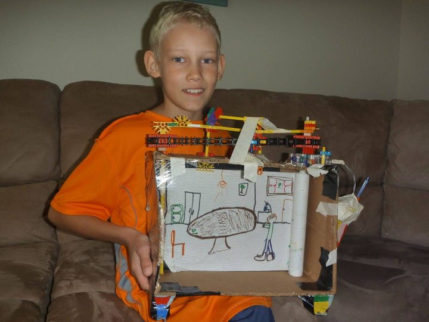
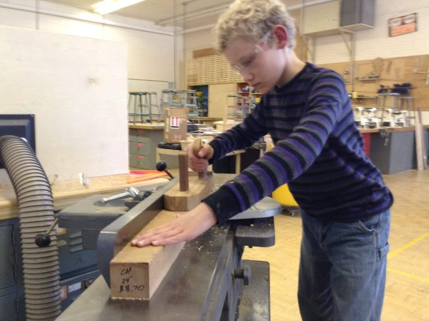
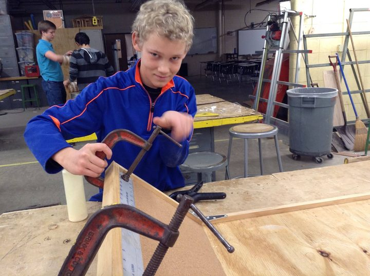
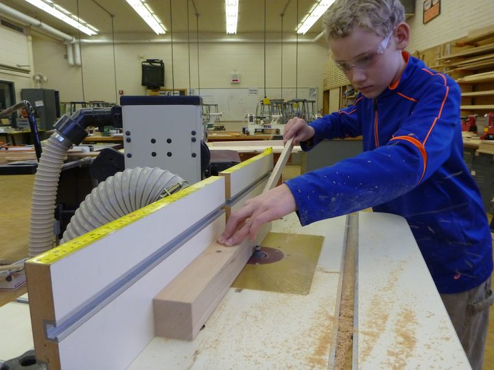
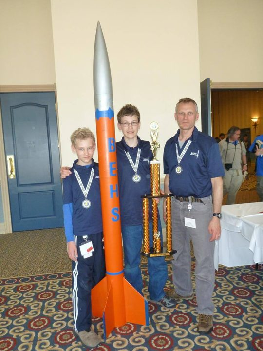
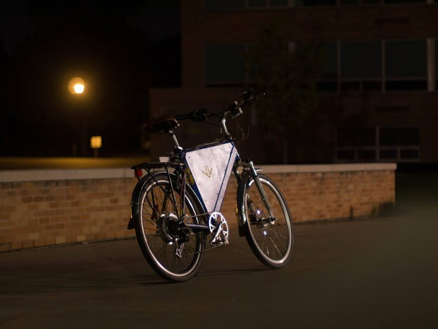
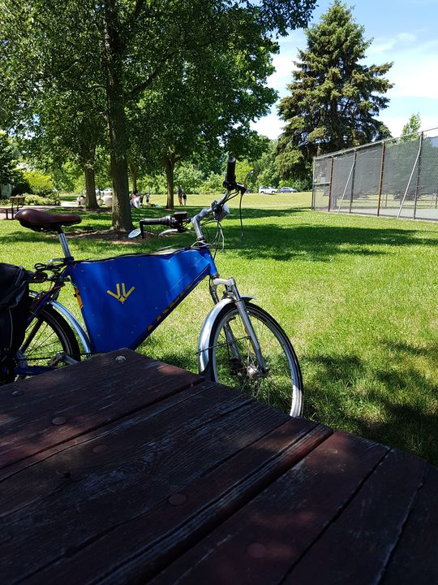

2012 – 2017
Early Work: Maker Faire, Clearwater, Rockets
Where it started: woodshop as a kid, a Vrakas Labs booth and 3D-modeling seminars at Maker Faire Milwaukee, a transparent water-cooled PC that Nvidia called "great work", high-power rockets and a DIY e-bike.
- Maker Faire
- Teaching
- Laser cutting
- Water cooling
- High-power rocketry
- E-bike

Starting young
Woodshop, clamps and cardboard robots. Most of what came later started here.




Maker Faire Milwaukee (2012–2016)
Vrakas Labs had a booth at Maker Faire Milwaukee every year from 2012 to 2016, showing printers, PCs and projects. I also gave public seminars on 3D modeling in Autodesk Inventor.


Project Clearwater (2014–2016)
Clearwater was my second custom PC case and the first to use 3D printing: a fully transparent, water-cooled case built from 3D-printed joints and laser-cut acrylic panels, with a Pentium G3258 at 4.8 GHz and a GTX 960, both TEC (Peltier) cooled. Nvidia commented "great work" on it, and it later caught AMD's eye, which led to the sponsored Carbon 3D chassis.
PC showcase accounts on Instagram picked it up in October 2016:
"This is definitely the cleanest build I have ever seen… And can you believe, it has been done by a 15 year old builder." @pc.crazy (1,000+ likes)
@whatthemod also featured it with a write-up of how the case was designed and fabricated, and @techisland and @overclocked.pc reposted it.


Rockets for Schools
As co-captain, I led a regional-champion team in the Rockets for Schools program. We won first- and second-place awards at the Midwest launch competitions, designing and building payloads and fuselages for high-power rockets up to six feet tall.
- 2014 (3rd place): a payload of custom PCBs and software measuring air pollution (CO₂, NOx, MOx) through the flight.
- 2015 (2nd place): a payload studying "dark lightning", the radiation bursts high-altitude electrical discharges can produce, with custom circuitry calibrated to industry-standard methods.



DIY e-bike (2017)
I built an e-bike in high school because commercial ones cost too much. It's made almost entirely from recycled parts. Everything except the speed controller came to about $65. It was one of the projects that led to the electric longboards.



